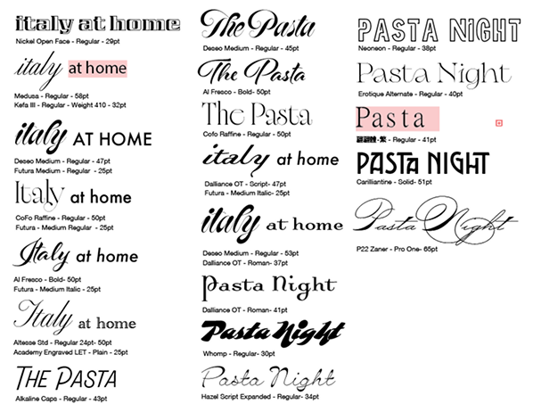
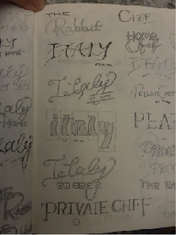
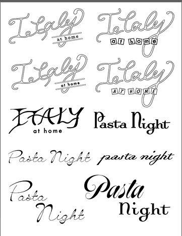
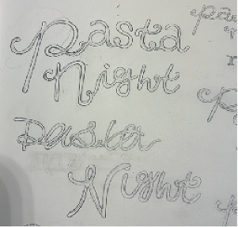
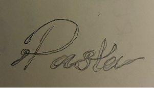
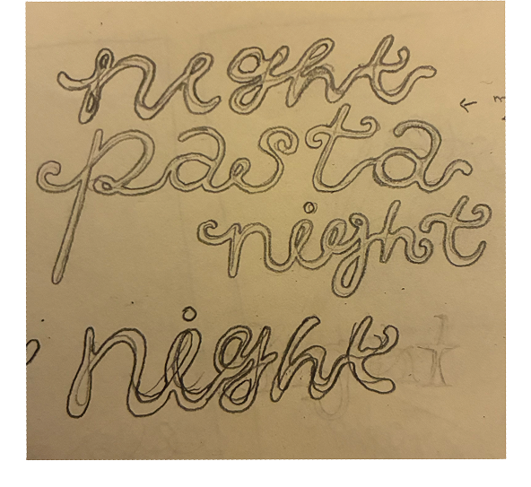
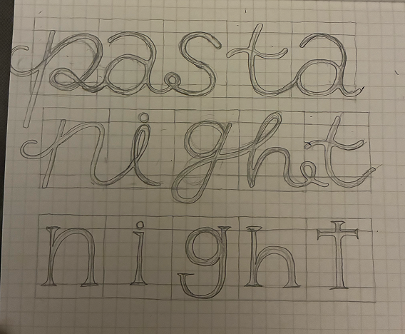
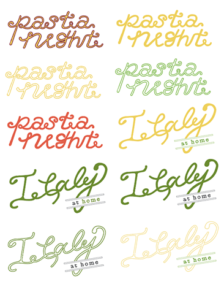
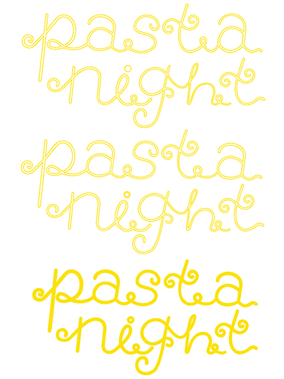
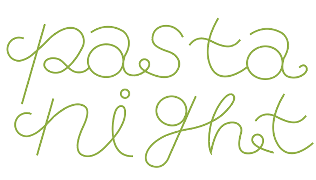

Maika O.
Take a look at the concepts of the film.










This was the final typeface design I chose after much deliberation. I hand-drew it and touched it up in illustrator. I wanted to emphasize the look of noodles with the spirals and connecting letters.
I chose the yellow color as the official color for the type within the film to make it pop. There’s a subtle gray overlay within the film to make the text pop when you’re watching.